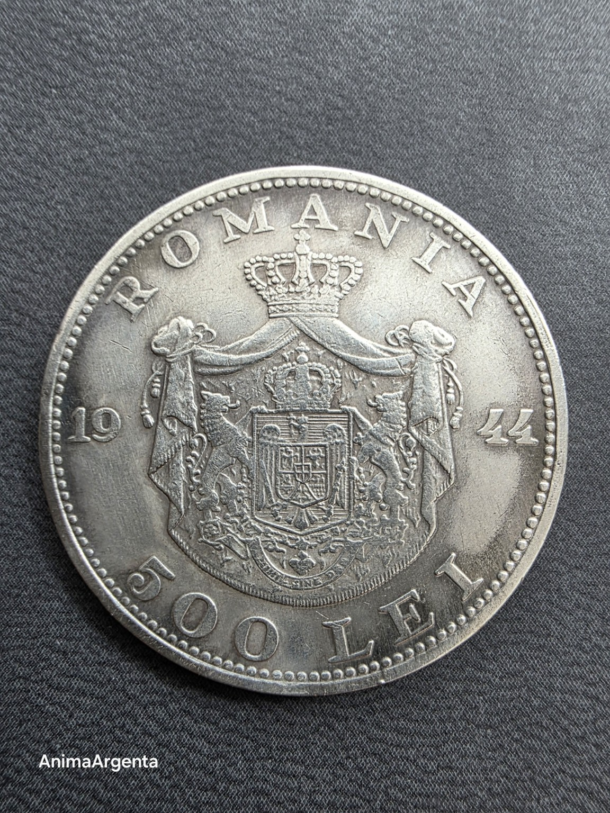
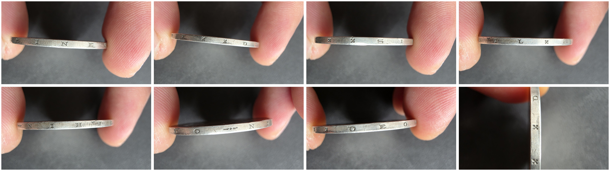

Nada sin Dios
AA-1944-01 · edición 1/1



En 1944, el rostro joven de Mihai I quedó frente al escudo de una Rumanía atravesada por la guerra. En el canto, tres palabras sostienen la pieza como una declaración: NIHIL SINE DEO, nada sin Dios.
- Objeto
- Este ejemplar físico concreto
- Emisión
- 9.731.000 ejemplares
- Metal
- Plata 0,700
- Peso oficial
- 12 g
- Diámetro
- 32 mm
- Ceca
- Monetăria Statului, Bucarest
- Grabador
- Haralambie Ionescu
- Canto
- NIHIL SINE DEO — Nada sin Dios
- Estado digital
- Publicado; pendiente de verificación en cadena
Una moneda física = una pieza digital. Emisión: 1. Sin reemisión.